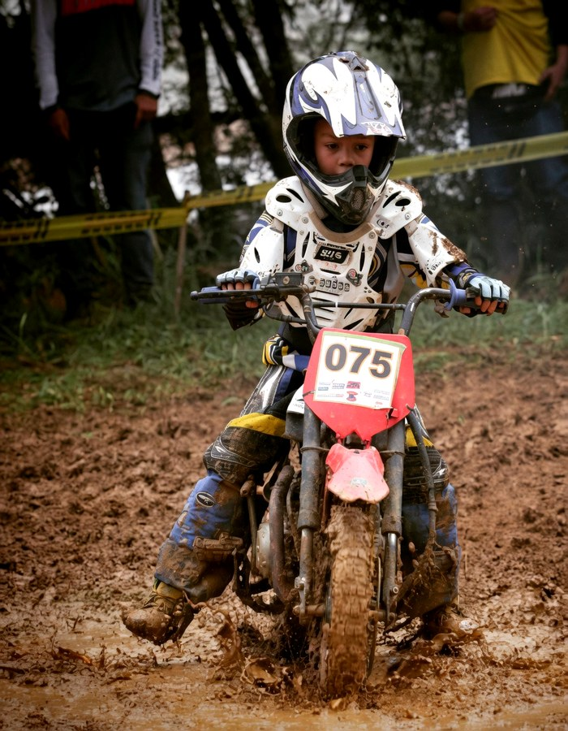
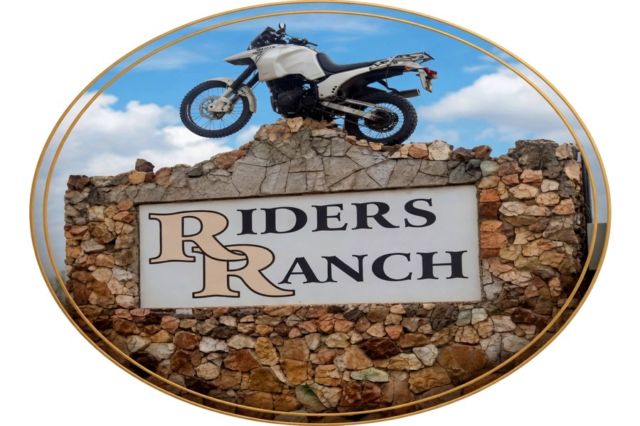
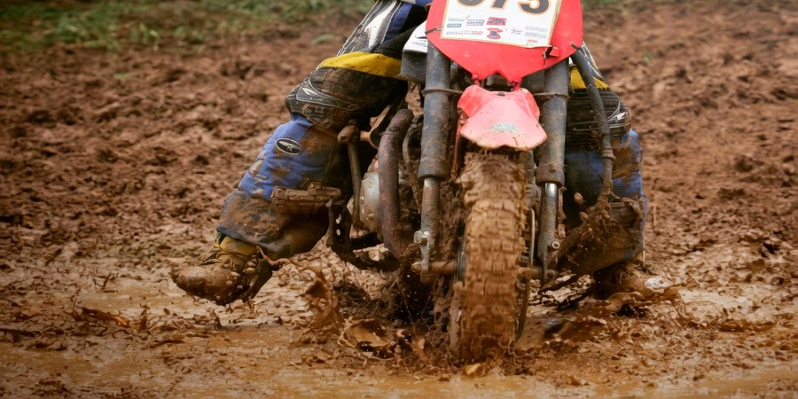

△ Sidvokodvo, Eswatini △
Where the roads of Eswatini's Middleveld become home. A biking club built on community, adventure, and five decades of riding together.
Year Founded
Riding Groups
Longest Weekly Ride
Years Strong




Welcome to the club
Riders Ranch Bikers Club has been uniting cycling enthusiasts since 1966 in the heart of the Kingdom of Eswatini. All ages, all abilities — but our soul belongs to the generation that never stopped riding.
Fast, medium, or easy paced — choose the group that fits. Routes from 25 to 50 km every Sunday through beautiful Middleveld terrain.
Time trials, the Swazi Rally, overnight tours, and the annual awards dinner. Always something to ride for.
Every group, every Sunday — all roads lead to the same local bar. The ride ends, the stories don't.
Weekday evenings, Saturdays, Sundays. New riders always welcome. Show up and discover what Riders Ranch is made of.
The Home of Eswatini Riding
From beginners to champions. From kids on their first bike to veterans who know every corner of the Middleveld.
Join Riders Ranch
Our Home
That bike mounted on the stone wall tells the whole story. Riders Ranch has been a physical landmark in Sidvokodvo since 1966 — a destination for everyone who loves two wheels.
Walk through that gate any Sunday morning and you'll find three groups gearing up, helmets on, tyres checked, ready to hit the open roads of Eswatini's Middleveld.
Read Our StoryEvery Sunday
| Group | Start | Distance | Pace | Best For |
|---|---|---|---|---|
| 🔥 Fast Group | 9:15 AM | ~50 km | High intensity | Experienced & competitive |
| 🕑 Medium Group | 9:30 AM | ~35 km | Moderate | Regular cyclists |
| 🌞 Easy Group | 10:00 AM | ~25 km | Gentle & social | Beginners & seniors |
● All groups meet for lunch after ● Club open weekday evenings & Saturdays

Off Road
All Ages
Ready to roll?
Show up any Sunday morning. Pick a group. Discover why Riders Ranch has kept this community together for over five decades on the open roads of Eswatini.